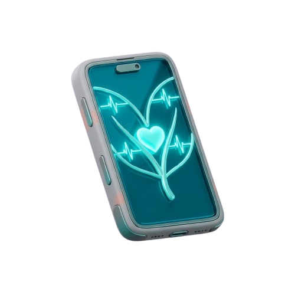

Monitore seu coração em tempo real
Monitoramento inteligente com alertas e acompanhamento contínuo.
Cadastre-se
Monitoramento inteligente com alertas e acompanhamento contínuo.
Cadastre-se

Acompanhamento contínuo com precisão.

Notificações automáticas em tempo real.

Relatórios simples e acessíveis.

Tudo começou com o irmão mais velho de uma dos integrantes que tem 23 anos e, desde que nasceu, sofre com uma desregulação cardíaca. Ele sempre foi uma pessoa muito ativa e é professor de beach tennis, um esporte bastante intenso. Recentemente, após perceber que ele vinha apresentando alterações cardíacas mais frequentes, a médica recomendou que ele evitasse esforços físicos intensos, devido à sua condição. Quando o irmão era mais novo, a mãe tinha muito medo e ficava preocupada sempre que ele saía de casa sem ela, pois não sabia o que poderia acontecer caso ele tivesse uma crise. Pensando nisso, surgiu a ideia de desenvolver uma pulseira inteligente que possa auxiliá-lo no monitoramento da saúde cardíaca, permitindo que ele continue praticando atividades com segurança. Com esse projeto, situações como as que a mãe vivia podem ser evitadas, já que ela — e qualquer outro responsável poderá acompanhar os sinais vitais diretamente na palma da mão, por meio de um aplicativo conectado, e tudo isso com baixo custo, tornando o acesso mais fácil para quem precisa.